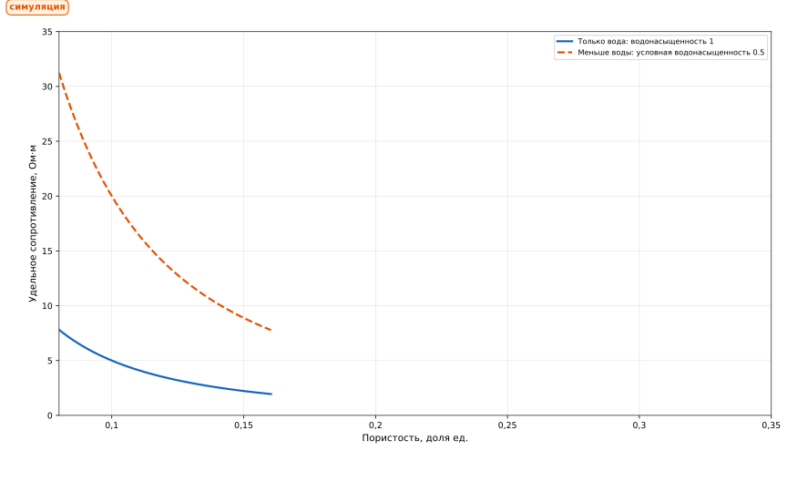
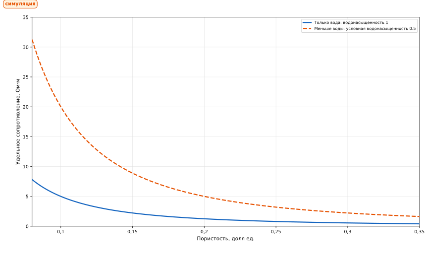
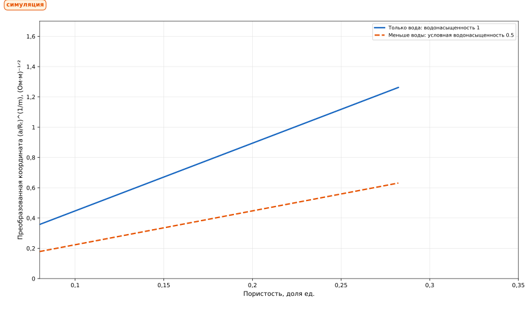
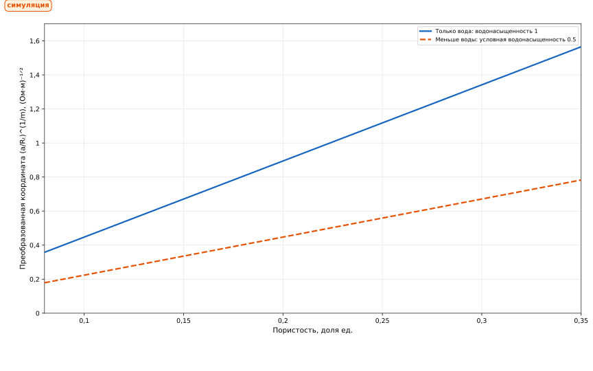

Чтобы линии насыщенности стали прямыми, Хингл меняет не измерения, а шкалу сопротивления.
Готовую сетку выбирают по параметрам породы.
Пороговая идея. По Хинглу линейность появляется не в измерении, а после преобразования шкалы сопротивления. модель
Интерактив: как это происходит




1 / 4
Прорисовываются начала кривых: можно ли распрямить их одним преобразованием?
Допущения: В обоих видах a = 1.0 и m = 2.0, как для песчаника в узле. Для расчёта условно использованы R_w = 0.05 Ом·м, n = 2 и водонасыщенность второй ветви 0.5; измерений узел не содержит.; В преобразованном виде вертикальная ось подписана в преобразованной величине; это не копия бумажной шкалы сопротивления..
Как это работает
Зачем менять ось
На диаграмме Хингла, графике сопротивления и пористости, сопоставляют те же величины, что у Пикетта. Две линейные шкалы дали бы кривые, а преобразованная форма уравнения Арчи делает их прямыми. При неизменной водонасыщенности преобразованная координата сопротивления прямо пропорциональна пористости. Шкала пористости линейная; шкала сопротивления сильно нелинейная. стр. 133
«As with the Pickett plot, the Hingle plot seeks to plot resistivity against porosity.»
«Plotting resistivity against porosity on linear scales produces a family of nonlinear trends.»
«By solving Archie's equation (Equation 7.1) in the following form, the nonlinear trends become straight lines (Bassiouni, 1994):»
«While porosity is plotted on a linear scale, the resistivity is plotted on a very nonlinear scale.»
схема
Преобразование координаты сопротивления выпрямляет тренды при фиксированной водонасыщенности.
Класс B · схема · нарисовано кодом · стр. 133
Какую сетку взять
Подберите сетку под коэффициент извилистости $a$ и показатель цементации $m$ из модели Арчи. Для песчаников обычно используют $a=1{,}0$ и $m=2{,}0$. Для карбонатных пород используют a = 0,62 и m = 2,15. Готовая сетка позволяет нанести сопротивление без отдельного расчёта преобразованного значения. стр. 133
«In practice, the resistivity is plotted on a grid that has been constructed for specific values of tortuosity factor (a) and cementation exponent (m).»
«The grid constructed using a = 1.0 and m = 2.0 is usually used for sandstones (Figure 7.5)»
«the grid constructed using a = 0.62 and m = 2.15 is used for carbonates (Figure 7.6).»
«Using the constructed grids, resistivity values can be plotted directly on the graph without the need for any calculations.»
По шагам
По шагам
Подберите сетку по принятым коэффициенту извилистости и показателю цементации. стр. 133
Нанесите пористость по линейной оси, а сопротивление — по сетке. стр. 133
Цифры и условия
Для песчаников обычно используют $a=1{,}0$ и $m=2{,}0$. стр. 133
Для карбонатных пород используют a = 0,62 и m = 2,15. стр. 133
Прямая пропорциональность действует при неизменной водонасыщенности. стр. 133
Преобразование уравнения Арчи для построения прямых на диаграмме Хингла. стр. 133
Обозначения
Обозначение
Что это
Единицы
$a$
коэффициент извилистости
—
$R_t$
истинное удельное сопротивление пласта
—
$m$
показатель цементации
—
$S_w$
водонасыщенность
—
$n$
показатель насыщения
—
$R_w$
удельное сопротивление пластовой воды
—
$\phi$
пористость
—
Что это значит для данных по книге
Преобразованная координата и исходное сопротивление — разные представления одной величины.
Вход
Пары пористости и сопротивления; параметры сетки.
Выход
Точки на диаграмме Хингла.
Где ломается
При обычной линейной шкале сопротивления ожидаемые тренды не являются прямыми.
Где здесь ручной труд специалиста
Входные данные
Пористость, сопротивление, тип породы, параметры сетки.
Ручные шаги
Выбрать сетку и перенести пары значений.
Точки суждения
Определить, какая сетка соответствует породе.
Время
Сетка сокращает пересчёт каждой точки.
Типичные ошибки
Нанести сопротивление по обычной линейной шкале.
Аналогия модель
Это похоже на преобразование признака перед линейной аппроксимацией.
Где аналогия перестаёт работать: Здесь преобразование задаёт физическая модель с заданными параметрами, а не алгоритм, выбирающий его по качеству подгонки.
Как это делается сейчас модель
Преобразование и нанесение точек можно автоматизировать; выбор параметров сетки остаётся явным входом расчёта.
Новые понятия
удельное сопротивление (resistivity)
Мера того, насколько материал препятствует протеканию электрического тока. модель
пористость (porosity)
Доля объёма породы, приходящаяся на поры. модель
водонасыщенность (water saturation)
Доля объёма пор, занятого водой. модель
уравнение Арчи (Archie's equation)
Связь водонасыщенности, пористости и сопротивлений породы и пластовой воды. модель
коэффициент извилистости (tortuosity factor)
Параметр a в уравнении Арчи, учитывающий извилистость путей электрического тока. модель
показатель цементации (cementation exponent)
Показатель m, определяющий зависимость сопротивления от пористости в уравнении Арчи. модель
показатель насыщения (saturation exponent)
Показатель n, задающий в уравнении Арчи зависимость сопротивления от доли воды в порах. модель
диаграмма Хингла (Hingle plot)
Кроссплот с линейной шкалой пористости и нелинейной шкалой сопротивления, задаваемой коэффициентом извилистости и показателем цементации. стр. 133
диаграмма Пикетта (Pickett plot)
Кроссплот сопротивления и пористости на логарифмических шкалах. стр. 135
кроссплот (crossplot)
График, на котором точка представляет пару значений, относящихся к одному интервалу. модель
песчаник (sandstone)
Порода, сложенная преимущественно зёрнами песчаного размера. модель
карбонатная порода (carbonate rock)
Порода, состоящая преимущественно из карбонатных минералов. модель
пластовая вода (formation water)
Вода, находящаяся в порах пласта. модель
Проверь себя
Пропуск в тексте
Назовите ось, для которой требуется преобразование.
Шкала на диаграмме Хингла сильно нелинейная.
Верный ответ: Шкала [сопротивления] на диаграмме Хингла сильно нелинейная.
Шкала пористости линейная, а шкала сопротивления сильно нелинейная. наблюдение
«While porosity is plotted on a linear scale, the resistivity is plotted on a very nonlinear scale.»
Сетку для сопротивления строят под заданные коэффициент извилистости и показатель цементации. наблюдение
«In practice, the resistivity is plotted on a grid that has been constructed for specific values of tortuosity factor (a) and cementation exponent (m).»
Для песчаников обычно используют сетку с $a=1.0$ и $m=2.0$. допущение
«The grid constructed using a = 1.0 and m = 2.0 is usually used for sandstones (Figure 7.5)»
Для карбонатных пород используют сетку с $a=0.62$ и $m=2.15$. допущение
«the grid constructed using a = 0.62 and m = 2.15 is used for carbonates (Figure 7.6).»
При наличии готовой сетки сопротивление наносят напрямую без расчёта преобразованного значения. вывод
«Using the constructed grids, resistivity values can be plotted directly on the graph without the need for any calculations.»
Исходный текст урока
Стр. 133 · Hingle Crossplot Method
As with the Pickett plot, the Hingle plot seeks to plot resistivity against porosity. Plotting resistivity against porosity on linear scales produces a family of nonlinear trends. By solving Archie's equation (Equation 7.1) in the following form, the nonlinear trends become straight lines (Bassiouni, 1994):
While porosity is plotted on a linear scale, the resistivity is plotted on a very nonlinear scale. In practice, the resistivity is plotted on a grid that has been constructed for specific values of tortuosity factor (a) and cementation exponent (m). The grid constructed using a = 1.0 and m = 2.0 is usually used for sandstones (Figure 7.5), and the grid constructed using a = 0.62 and m = 2.15 is used for carbonates (Figure 7.6). Using the constructed grids, resistivity values can be plotted directly on the graph without the need for any calculations.